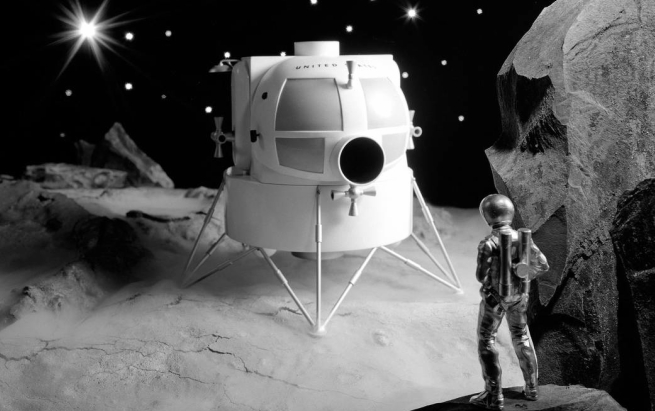
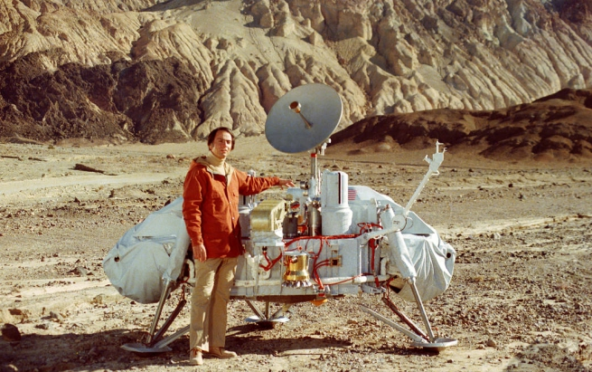

|  |
Can you guess what a lander spacecraft does?
That's right -- a lander is designed to actually land on a planet's surface. |
|  |
The landers can then use their instruments to analyze rocks and soil on the planet and send the data back to Earth. Examples of lander probes include Viking and Mars Pathfinder.
|